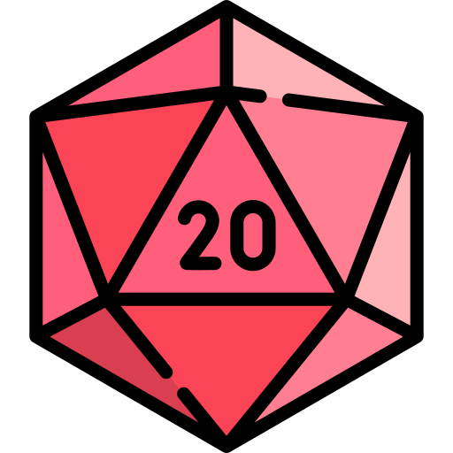

Dungeons & Dragons
Dungeons & Dragon is a fantasy tabletop RPG where a group of players create characters for a world that the dungeon Master, aka DM, sets out for them. It could be an adventure the DM created or based on of the book that Wizards of The Coast and or third party creator made. As of 2026, I have been playing it for roughly 5 years and managed to finish a 3 year long campaign with friends. When I'm not playing the game I like to listen to podcasts or watch tv shows that are based on D&D campagins. If you get the chance I highly recommend you to watch The Legend of Vox Machina.